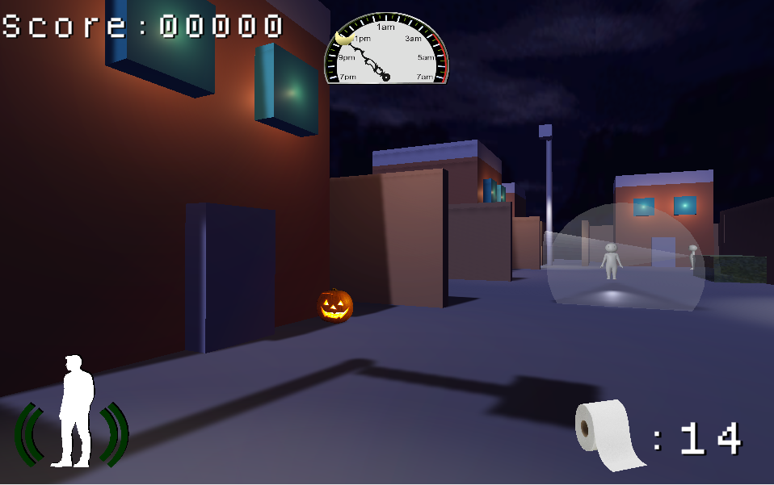

For the Queen
A small-scale multiplayer game made in Unity2D. You can play with friends or with strangers.
Anybody is allowed to create and join lobbies of up to 4 players. Gameplay is very simple, just be the last one standing by
shooting your opponents with your bow and arrow. The game is currently in its early stages and will be periodically updated and improved.
An early version and a video demo of the game is available on my Itch.io page.
Changeling
Changeling is a VR mystery, first-person 3D platformer game built upon
the idea of magical realism and a sense of unease and wonder. You play as Aurelia, a dream-walker
who has the ability to see through the eyes of anyone she touches. You are tasked with helping this
family figure out what is wrong with their child, and as you contact each member, you see through
the lens of their hopes and fears of what the child is.
Game Website: changelingvr.com.
TP Halloween

A semester long group project created with the creative minds of 5 students. We were tasked to create a game completely from
scratch with the theme of holidays. Game is created in Unity 3D with using an agile methodology. The project was split into sprints with weekly stand ups
and playtests. Specific things I worked on in this project is: level design, UI and game states, collision detection, a tutorial level, and other smaller
aspects of the game.
Game can be played on itch.io.
L4D3 the Unofficial Sequel
This is very barebones game where zombies will constantly be spawning and you must survive and kill as many zombies as you can.
there will be other humans but they are completely defenseless. You are the only human with a gun to defend ourself. This game was created inside the Unity game engine.
The focus of this project was to utilize vector math and forces to for the AI movement.
Play the game here.
Space Odyssey
This game is a rendition of the classic top down shmup/bullet hell style game. You control a space ship and try to avoid the incoming
asterodis and enemy space ships. Shoot down the obstacles to gain points and survive for aslong as you can. This web browser game was written primarily in JavaScript
and PixiJs, an HTML5 creation engine.
Click here to try out the game!
Beat Master

Beat Master is an audio visualizer with a game aspect to let you engage with the music. Groove to the music
and be mesmerized with the visuals while you keep the game alive in the simple game. Both the audio visualizer and the game are made using
Canvas and written in JavaScript.
Play the game here here.
Giveaway Galore

Thousands of giveaways are happening at any given moment but it can be hard to track or even find one. What if there was
an easy way to find these free giveaway? Well, the solution is right here. This simple web app allows you to search for active giveaways using GamerPowers API.
The site is built on Bulma's CSS library. Other technologys used are local storage for ui state preservation and favoriting, custom JavaScript web components, and
firebase, a real time database used to read and write data from users that use the site.
Check out the web app here.
Anime Finder

(The current version is discontinued and the site no longer works. Working on migrating to the newest version)
Have you wanted to easily search for any anime or manga with just one click? Have you ever want to know which animes are airing for a specific day of the week?
Look no farther because I made a website that allows you easily search for any anime/manga that exists! This website is written in HTML, CSS, and JavaScipt. The API I used is Jikan's myanimelist API.
Start searching for your animes here.